Introduction
As a member of a team, I worked on designing and prototyping new user interactions for navigating hierarchies using the microsoft hololens. NASA engineers may use these designs to improve their use of the hololens in meetings regarding the Mars rover. We went through a 6 week design process. The remainder of this web page will discuss some of my favorite parts of this process, namely the prototypes that we produced along the way along with some ideations and discussions. If you would like to read a more comprehensive account of what transpired, please click here. You can also checkout our final project communication website here.
Process
Here is a diagram of the process that we went through to accomplish this work. Note that we went through several iterative design phases as indicated by the loops within the diagram.
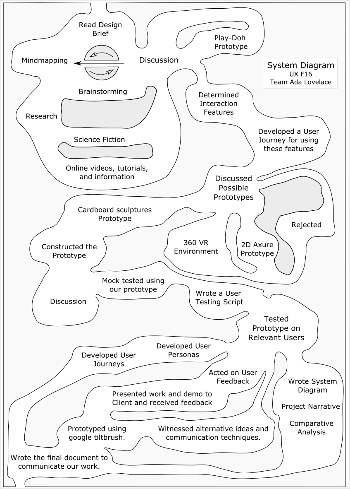Mindmapping
To start off the process, my team made a mind map on a whiteboard wall. At this point, we were trying to interpret what the brief meant, because it was a rather abstracted problem and each one of our group members had a unique perception of what the problem was. Also, since we were prototyping for a holo lens, there are many novel design criteria that are not present for applications for 2D screens. We had to think about the narrow field of view, 3D spatial interactions, and human anatomy such as thinking about minnimizing head movement. The mindmapping process helped us start off the group conversation and share are knowledge of the application with each other.
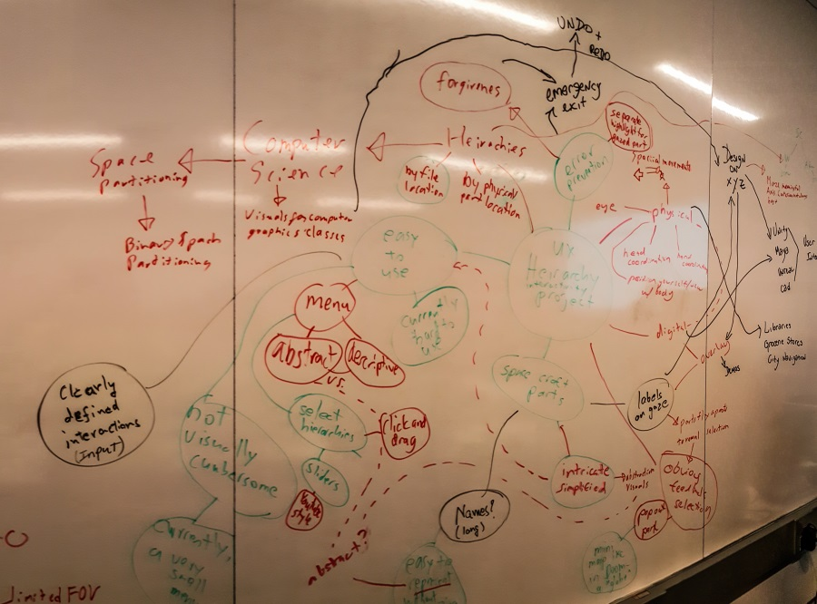Brainstorming
Later, my teammate Albert and I had a discussion where we brainstormed several possible interactions and ideas, including using binary search to prune the selection space, using hierchy sliders, selecting using 3D boxes, rather than 2D boxes on traditional screens, and some ideas about abstracting the display of the hiearchy from the photorealistic display of the rover. We had a good conversation where Albert led me to new ideas and I explained my theoretical formulation of the task at hand as the efficient subset selection problem.
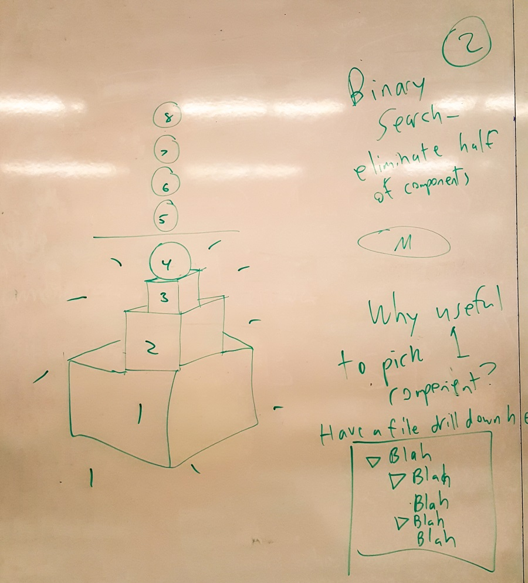Prototype 1: Play Doh
We used play-doh, spaghetti, paper, and colored markers to create our first prototype. This prototype mainly featured our first design of the part slider interaction and a minor modification to the blue gui bar. By making this prototype, we were able to have an effective conversation regarding our mutual understanding of the problem and our solution use the part slider.
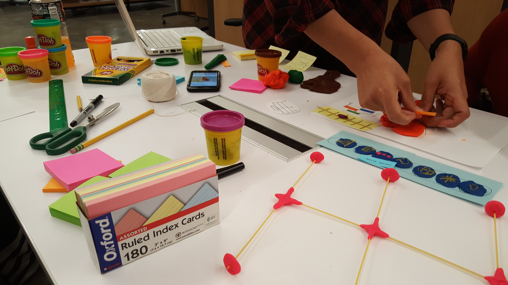Here is a close up photograph of the gui bar with a new button for our part slider interaction. The choice of materials allowed us to rapidly produce prototype elements with ease so that we could spend more time discussing with common tangible elements, and less time developing them.
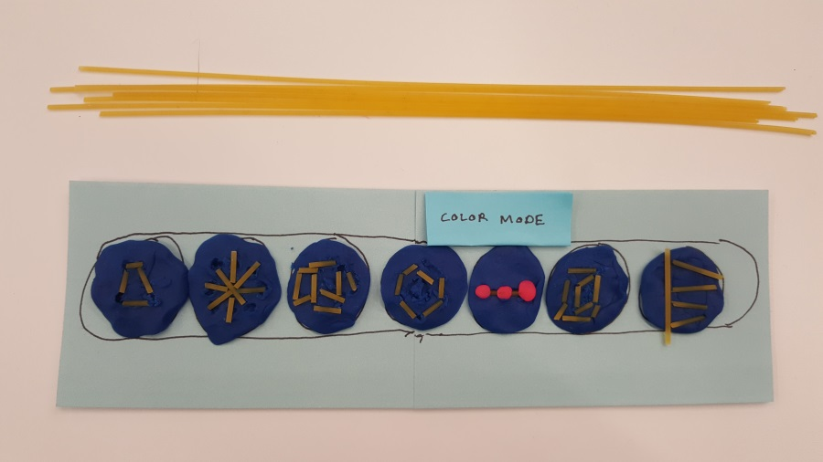Prototype 2: Paper
After the play-doh prototype, we invented the first iteration of our navTree that allows users to navigate the hierarchy in a top down fashion.
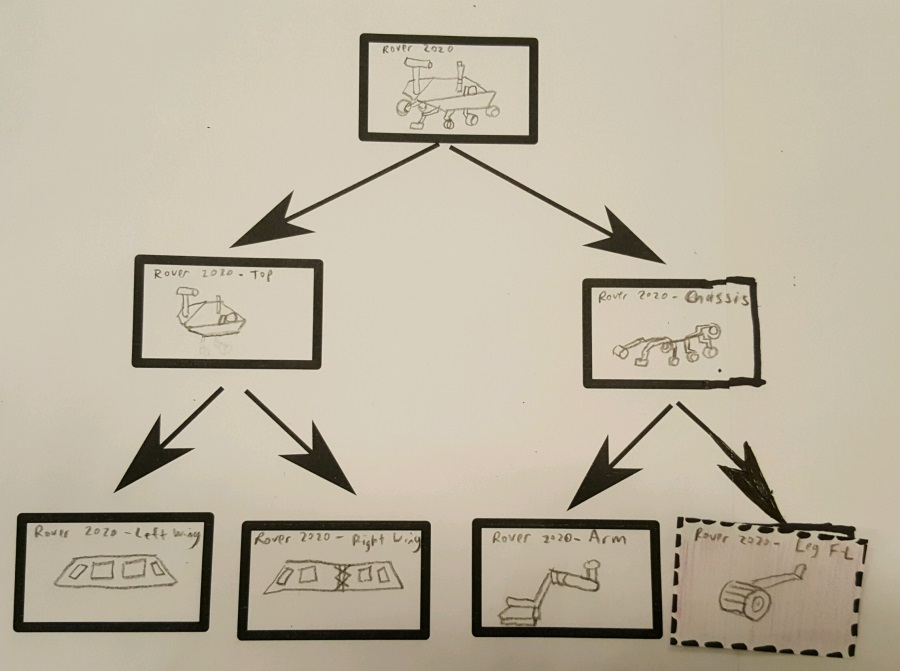Not much changed for the gui bar, but we continued to make new representations of it in each prototype to aid the effective testing of users.
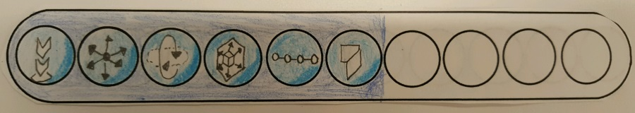We also tried out a replacement for the parts slider, where the user is presented with a bar of pictures rather than an abstract linear slider.
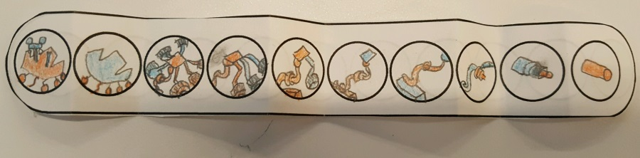It is a little bit cumbersome, because their could be radically different depths to different paths to leaf nodes in the hierarchy. We considered making the bar expandable or providing the user with an intuitive subset of the levels. We decided against the discrete picture set eventually, but in this iteration we folded the bar down to a limited set of 4 to simplify the testing.
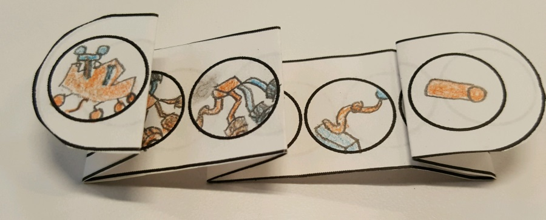By this point, we had decided to expanding the concept of selection to a two step process, where candidate elements would be selected and then desired elements could then be 'pinned.' This pinning process allows the user to navigate to each desired element while maintaing a culmulative set of pinned elements ultimatly resulting in the user's full desired set. Selected elements would be rerpesented by highlights and pinned elements would have a dashed line around them. Here is a photograph of our prototype depicting a rover with a selected and pinned arm.
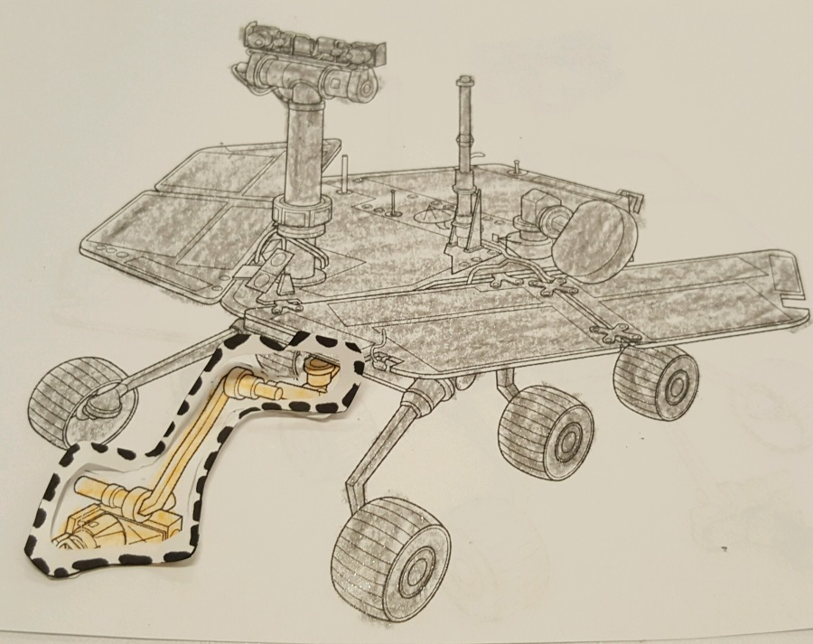Prototype 3: Cardboard
Once we had thoroughly tested our paper prototype and determined that the navTree and part slider were reasonable ideas, we made a 3D voluminous prototype out of cardboard. We were able to use this spatial model along a cardboard view limiting hololens to determine how well our ideas worked when viewed under perspective projection in a real environment.
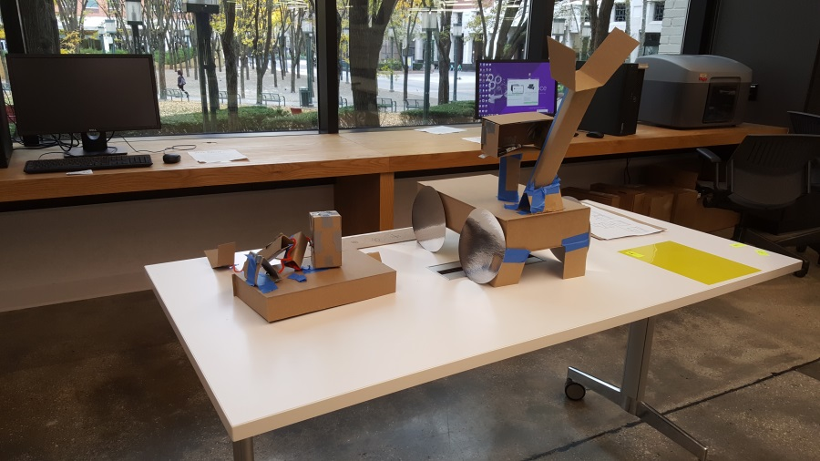Sketching
At this point, we had a meeting with our clients from the NASA JPL Ops lab. They believed in the idea of a NavTree, but they reccommended that we think about the design some more. So we went to our trusted white board walls and sketched out many potential NavTree designs. We had a lengthy conversation, where we debated various criteria, such as the tree's visual display, how to handle displaying part names, whether we should have the icons enlarge or not, vertical vs. horizontal layout, etc. Another big discussion point was how we would ensure that the navigation panes were always visible and reachable when users wanted them and unobstructive when users did not want them. In our cardboard prototype we had decided to have the NavTree stay stationary in the room, but I though that it would be a much better idea if it was relative to the user's position.
We had also by this point invented a new interaction element called the Explosphere. Hierarchical NavTree, the Explosphere allows users to explore the model spatially with pop out part, etc. This caters to a different type of user action than the tree. Users can use the tree when they know exactly where they want to go, but they can use the explosphere for general exploring. While engineers have a sophisticated rational model of the hierarchy, upper level managers may not, but they might still want to be briefed and have discussions about the Mars Rover.
To augment the parts slider for leaf components that are not visible, we designed a feature where the user can see into hidden parts by physically moving their head close to the rover model.
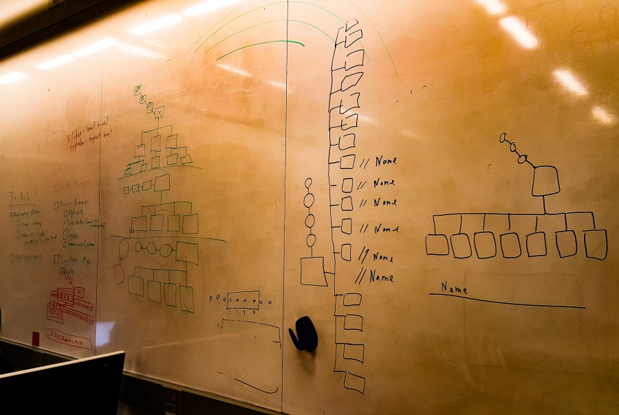Prototype 4: Tiltbrush
We eventually went with a design that looks like the following image. We deided to make our final prototype using Google Tiltbrush, because it allowed us to rapidly draw our interaction features in a 3D virtual reality environment. We also resolved the positioning problem by adding a positioning knob on the NavTree, where users can drag it to a position in space that is desirable for them. We also provided them with a knob to hide it completly.
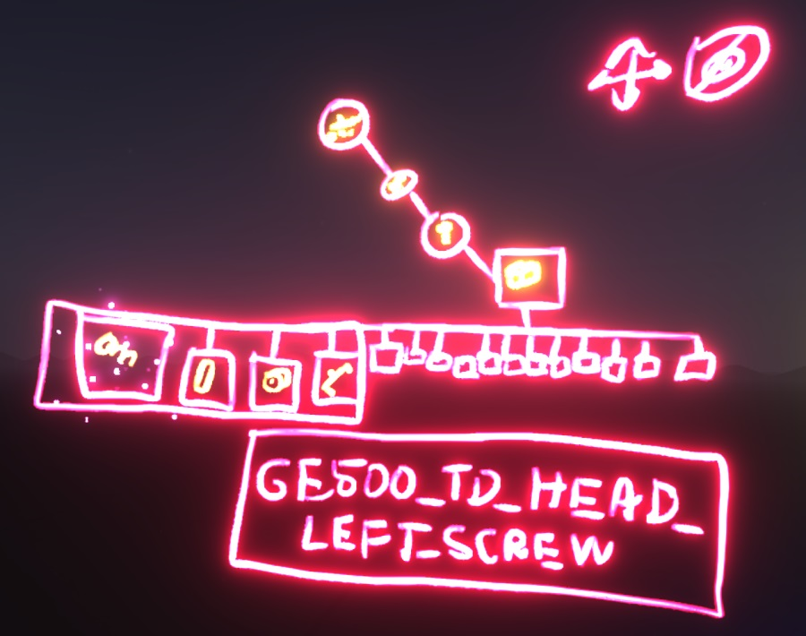The same goes for the Explosphere (depicted below).
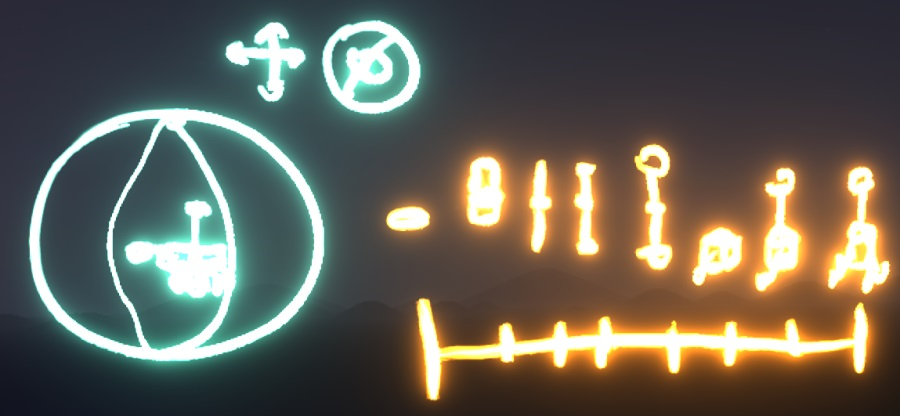Communicating our Work
We received some feedback that it was difficult to understand our designs when they were presented as screenshots of Google Tiltbrush settings. THe immersion and 3D viewing of Tiltbrush is evidently limited to the experience itself, rather than its documentation. We therefore decided to make some animated gifs of our interactions to make them more presentable online. Please click here to see our gif that depicts a user using the parts slider. I was in charge of desiging a system diagram to communicate our journey through the process. You most likely saw it at the top of this page on your way down here. I did some sketching for this phase as well. Please see the following image that shows my sketch of the system diagram concept and some designs for the NavTree.
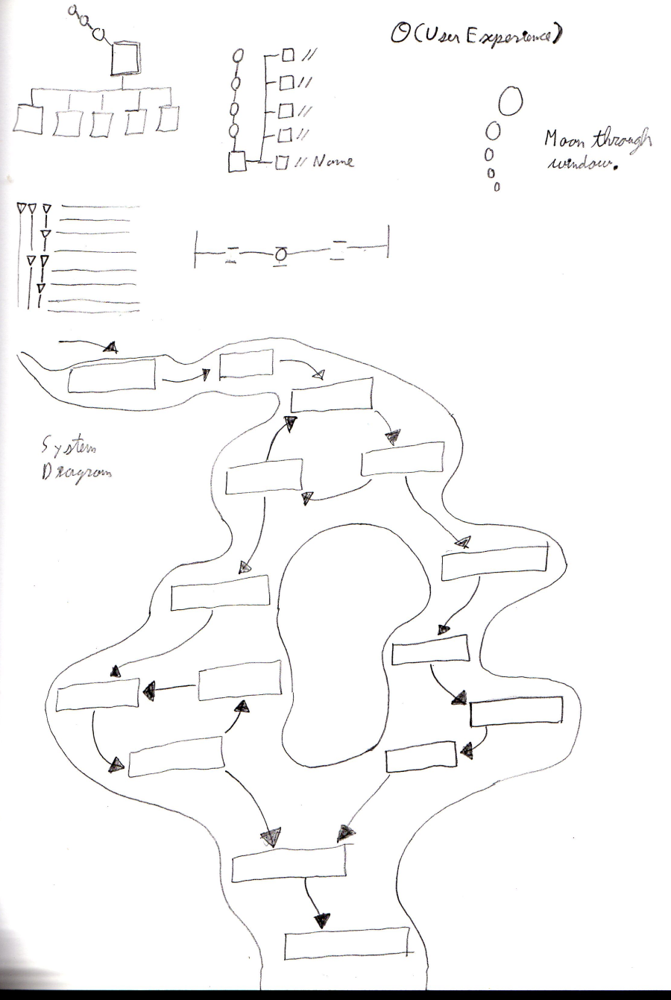